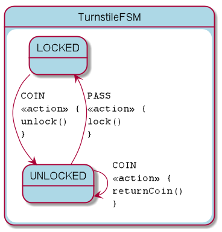

@Test
fun produceVisualizationTurnstileFSM() {
println("== TurnStile")
val visualization = visualize(TurnstileFSM.definition) // (1)
File("generated", "turnstile.plantuml").writeText(plantUml(visualization)) // (2)
}
KFSM-VIZ
Simple Visualization
The simple visualization uses the resulting definition and can render states and transitions. You will typically add a method to a unit test class as follows:
-
TurnstileFSM.definitionis the definition that will be rendered. -
The
plantumlmethod accepts the output ofvisualizeand produces a state diagram in the plantuml format.
Detail Visualisation
You may invoke the parser from a unit test similar to the simple case.
dependencies {
testImplementation 'io.jumpco.open:kfsm-viz:1.0.6'
}@Test
fun produceVisualizationTurnstileFSM() {
println("== TurnStile")
val visualization = parseStateMachine("TurnstileFSM", File("src/test/kotlin/Turnstile.kt")) // (1)
println(visualization)
File("generated-parsed", "turnstile.plantuml").writeText(plantUml(visualization)) // (2)
File("generated-parsed", "turnstile.adoc").writeText(asciiDoc(visualization)) // (3)
}-
Provide classname for the class holding the definition DSL and the sourcefile where the class may be found.
-
Use the
plantumlmethod to generate the text for a plantuml state diagram. -
Use the
asciidocmethod to generate an Asciidoc formatted state table.
Expected output
Turnstile State Table
| Start | Event[Guard] | Target | Action |
|---|---|---|---|
LOCKED |
COIN |
UNLOCKED |
|
UNLOCKED |
COIN |
UNLOCKED |
|
UNLOCKED |
PASS |
LOCKED |
|
Turnstile State Diagram

Examples
Many examples can be found at: https://github.com/open-jumpco/kfsm-viz
Gradle Plugin
Use the kfsm-viz-plugin for Gradle to make the visualization part of your build without writing code.
Resources
-
Source kfsm-viz